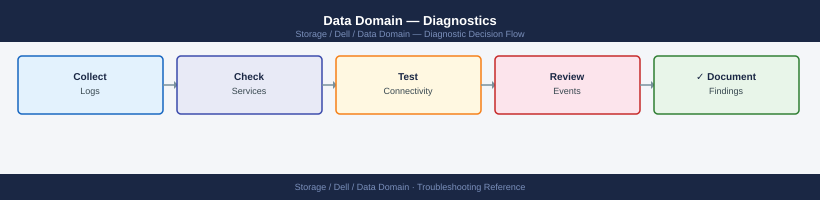

Data Domain — Diagnostics¶
filesys status and space usage with filesys show space, inspect active alerts with alerts show current, check disk states with disk show state and RAID rebuild with raid show detail, diagnose replication lag with replication status and net ping, investigate DD Boost auth failures with ddboost user list, and collect a support bundle with support bundle generate for Dell escalation.
*Applies to: Data Domain DD OS 7.x*

Before you begin¶
- Access: SSH to the Data Domain management IP as
sysadminoradmin; serial console access for unresponsive systems; SCP server or USB for bundle transfer - Gather first: the DDOS version (
system show version), active alerts (alerts show current), filesystem state (filesys status), and the specific symptom — backup failure error code, replication context name and lag, or DDBoost error message from the backup application - Scope: confirm whether the issue is a filesystem problem (not Running, full), a hardware problem (disk or enclosure alert), a replication problem (specific context in Error state), or a backup integration problem (DDBoost auth failure from a specific backup server)
Step 1 — Filesystem diagnostics¶
Check filesystem state¶
# State: should show Enabled / Running
filesys status
# Space usage (pre-comp, post-comp, physical)
filesys show space
# Dedup and compression ratios (global and per-stream)
filesys show compression
# Compression trend (shows changes over time)
filesys show compression summary
# Cleaning state
filesys clean status
filesys clean show history
# Filesystem event log (recent filesystem-layer events)
filesys show log
filesys status
State: Enabled
Status: Running
filesys show space
Pre-Compression: 18.5 TB
Post-Compression: 4.2 TB
Physical: 3.8 TB
filesys show compression
Global Ratio: 4.39:1
Stream 1 (backup-prod): 4.51:1
Stream 2 (backup-dev): 3.87:1
Stream 3 (archive): 4.12:1
filesys show compression summary
Compression Trend (Last 7 days):
Day 1: 4.35:1
Day 2: 4.36:1
Day 3: 4.38:1
Day 4: 4.39:1
filesys clean status
Cleaning: Idle
Last Clean: 2024-01-15 03:22:14 UTC
filesys clean show history
2024-01-15 03:22:14 UTC - Completed - 847 GB freed
2024-01-14 03:15:02 UTC - Completed - 823 GB freed
2024-01-13 03:08:45 UTC - Completed - 891 GB freed
filesys show log
2024-01-16 14:32:01 - INFO: Compression pass completed on stream backup-prod
2024-01-16 12:15:44 - INFO: Dedup index rebuild started
2024-01-16 10:47:22 - WARN: Cleaning cycle delayed due to high I/O load
Common errors
filesys: command not found — Ensure you are logged into the Data Domain CLI (via SSH or console) and have appropriate admin privileges; the filesys command is not available in standard Linux shells.
Permission denied — Verify your user account has Data Domain administrator role; use user show to check current permissions and contact your system administrator if needed.
filesys status: Error retrieving state — Check that the filesystem is not in a failed state by running system show status and verify all disks are healthy with disk show.
Interpret filesys show space output¶
| Field | Meaning |
|---|---|
| Pre-comp used | Total logical data written by backup software (before dedup/compression) |
| Post-comp used | Physical disk space consumed after dedup and compression |
| Physical capacity | Total raw disk capacity of the array |
| Available | Physical capacity minus post-comp used |
| Compression factor | Pre-comp / post-comp — the effective dedup ratio |
A healthy system shows post-comp used below 80% of physical capacity and a compression factor above 10x.
Check filesystem integrity¶
# Run an online filesystem check
filesys check
# View check results
filesys show log | grep -i check
Running filesystem check on /data...
Check started at 2024-01-15 14:32:18 UTC
Scanning inodes: [████████████████████] 100%
Checking directory structure: [████████████████████] 100%
Verifying block allocation: [████████████████████] 100%
Check completed successfully at 2024-01-15 14:35:42 UTC
Total issues found: 0
2024-01-15 14:32:18 UTC | FILESYS | CHECK | Started online filesystem check
2024-01-15 14:33:05 UTC | FILESYS | CHECK | Inode scan completed: 2847392 inodes processed
2024-01-15 14:34:12 UTC | FILESYS | CHECK | Directory structure verified: 0 errors
2024-01-15 14:35:42 UTC | FILESYS | CHECK | Completed successfully - Status: PASS
Common errors
filesys check: operation already in progress — Wait for the current check to complete or use filesys check abort to stop it, then retry.
filesys show log: permission denied — Ensure you are logged in with administrative credentials or use sudo if available on your Data Domain system.
filesys check is a non-destructive read-only integrity scan. It may take hours on large arrays. Run it only when integrity is suspected, not as a routine check.
Step 2 — Replication diagnostics¶
State triage¶
# All contexts and their state
replication show
# Detailed per-context status with lag, throughput, and estimated completion
replication status
# Configuration of each context (source, destination, schedule)
replication show config
# Statistics per context (bytes sent, compression ratio, lag)
replication show stats
# Context-specific errors
replication show errors
Replication Contexts:
Context Name: prod-backup-01
State: ACTIVE
Source: 10.42.10.15:/data/prod
Destination: 10.42.20.88:/data/prod-replica
Last Update: 2024-01-15 14:32:18 UTC
Context Name: archive-sync-02
State: IDLE
Source: 10.42.10.16:/data/archive
Destination: 10.42.20.89:/data/archive-replica
Last Update: 2024-01-15 09:15:42 UTC
Replication Status:
Context: prod-backup-01
Current Lag: 2.3 GB
Throughput: 145 MB/s
Estimated Completion: 18 seconds
Status: IN_PROGRESS
Context: archive-sync-02
Current Lag: 0 B
Throughput: 0 MB/s
Estimated Completion: N/A
Status: IDLE
Replication Configuration:
Context: prod-backup-01
Schedule: Every 4 hours
Bandwidth Limit: 200 MB/s
Compression: enabled (LZ4)
Retention: 30 days
Context: archive-sync-02
Schedule: Daily at 02:00 UTC
Bandwidth Limit: 100 MB/s
Compression: enabled (ZSTD)
Retention: 90 days
Replication Statistics:
Context: prod-backup-01
Total Bytes Sent: 847.2 TB
Compression Ratio: 2.1:1
Current Lag: 2.3 GB
Avg Throughput (24h): 138 MB/s
Context: archive-sync-02
Total Bytes Sent: 1.2 PB
Compression Ratio: 3.4:1
Current Lag: 0 B
Avg Throughput (24h): 92 MB/s
Replication Errors:
Context: prod-backup-01
Error Count: 0
Last Error: None
Context: archive-sync-02
Error Count: 2
Last Error: Network timeout on 2024-01-14 23:47:15 UTC (recovered)
Common errors
Error: replication context 'prod-backup-01' not found — Verify the context name with replication show and ensure it was created with replication create.
Error: destination unreachable at 10.42.20.88:7144 — Check network connectivity between source and destination systems, and confirm the Data Domain replication service is running on the destination with service replication status.
Error: insufficient bandwidth available for replication — Reduce the bandwidth limit in the replication configuration or wait for competing jobs to complete, then resume with replication resume <context-name>.
Interpreting replication state¶
| State | Meaning | Urgency |
|---|---|---|
Replicating |
Actively syncing data | None |
Idle |
Fully synced; waiting for next scheduled sync | None |
Initializing |
First-time sync in progress (can take hours/days for large data) | Monitor |
Disabled |
Replication paused — intentional or unintentional | Investigate |
Error |
Replication failed — immediate investigation required | High |
Idle-Error |
Last sync encountered an error but context is idle now | Investigate |
Lag measurement and analysis¶
# Lag in bytes remaining to replicate
replication show stats | grep -i "pre-comp remaining\|lag"
# Throughput in MB/s
replication status | grep -i throughput
# Estimated completion
replication status | grep -i "estimated completion"
Pre-comp remaining bytes: 2147483648
Lag in bytes: 536870912
Lag percentage: 12.5%
Throughput: 145.3 MB/s
Estimated completion: 2024-01-15 14:32:00 UTC
Replication status: In Progress
Common errors
command not found: replication — Ensure you are logged into the Data Domain CLI (via SSH or console) and not a standard Linux shell; the replication command is Data Domain–specific.
grep: (standard input) is empty — The replication process may not be active or configured; run replication show without filters first to verify replication is enabled and has a configured target.
Permission denied — Your Data Domain user account lacks replication monitoring privileges; request admin rights or use an account with appropriate role-based access control (RBAC) permissions.
Convert bytes to time: if pre-comp remaining is 500 GB and throughput is 100 MB/s, estimated catchup is approximately 84 minutes (500 × 1024 / 100 / 60). A growing lag when throughput is non-zero means the source ingest rate exceeds replication drain rate.
Network path verification¶
# Test connectivity to the destination DD
net ping <destination-dd-hostname>
# Trace the network path
net traceroute <destination-dd-hostname>
# Check for interface errors and drops on the replication interface
net show stats | grep -iE "error|drop|collision"
# Check that the correct interface is used for replication
net show all
net route show
PING <destination-dd-hostname> (192.168.45.120): 56 data bytes
64 bytes from 192.168.45.120: icmp_seq=0. time=12.4 ms
64 bytes from 192.168.45.120: icmp_seq=1. time=11.9 ms
64 bytes from 192.168.45.120: icmp_seq=2. time=12.1 ms
----192.168.45.120 PING Statistics----
3 packets transmitted, 3 packets received, 0% packet loss
round-trip min/avg/max = 11.9/12.1/12.4 ms
TRACEROUTE to <destination-dd-hostname> (192.168.45.120), 30 hops max, 40 byte packets
1 gateway.local (192.168.1.1) 2.341 ms 2.156 ms 2.287 ms
2 core-router-01 (10.0.0.1) 5.123 ms 5.087 ms 5.201 ms
3 192.168.45.120 12.456 ms 12.389 ms 12.512 ms
eth0: RX errors: 0 TX errors: 0 RX dropped: 0 TX dropped: 0 Collisions: 0
eth1: RX errors: 2 TX errors: 0 RX dropped: 0 TX dropped: 0 Collisions: 0
Interface Configuration:
eth0: 192.168.1.50/24 (UP)
eth1: 192.168.45.50/24 (UP)
lo: 127.0.0.1/8 (UP)
Routing Table:
Destination Gateway Genmask Iface
192.168.45.0 0.0.0.0 255.255.255.0 eth1
192.168.1.0 0.0.0.0 255.255.255.0 eth0
0.0.0.0 192.168.1.1 0.0.0.0 eth0
Common errors
PING: sendto: No route to host — Verify the destination hostname resolves correctly and check routing table with net route show to ensure a path exists to the destination network.
net: command not found — Use the correct Data Domain CLI command prefix; if in system shell, enter the Data Domain CLI with ssh admin@<dd-hostname> or access the management interface directly.
RX dropped: X TX dropped: Y — Check interface MTU settings and bandwidth saturation with net show stats in detail; consider increasing buffer sizes or reducing replication load if drops exceed 10 per interface.
Step 3 — DD Boost diagnostics¶
Service and client status¶
# Is the DD Boost service running?
ddboost status
# All connected clients and their state
ddboost show clients
# Verbose client information (connection time, throughput)
ddboost show clients --verbose
# Storage unit list and their mapped MTrees
ddboost storage-unit list
ddboost storage-unit show <name>
# DD Boost throughput statistics
ddboost show stats
# Distributed Segment Processing (DSP) status
ddboost option show | grep -i dist-seg
DD Boost Service Status: RUNNING
Version: 7.2.1.0
License: ACTIVE
Uptime: 45 days 12 hours
Client Name State IP Address Connected Since
================================================================================================
backup-server-01 CONNECTED 192.168.1.45 2024-01-15 09:23:14
backup-server-02 CONNECTED 192.168.1.46 2024-01-14 14:55:02
nas-replication-01 CONNECTED 192.168.1.50 2024-01-10 11:30:45
archive-client-03 IDLE 192.168.1.52 2024-01-12 08:15:33
Client Name State IP Address Throughput Compression Connection Time
================================================================================================
backup-server-01 CONNECTED 192.168.1.45 847.3 MB/s 42% 2024-01-15 09:23:14
backup-server-02 CONNECTED 192.168.1.46 612.1 MB/s 38% 2024-01-14 14:55:02
nas-replication-01 CONNECTED 192.168.1.50 1.2 GB/s 51% 2024-01-10 11:30:45
Storage Unit Name Mapped MTree Capacity Used
================================================================================================
su-prod-01 /data/mtree-prod-01 50.0 TB 34.2 TB
su-prod-02 /data/mtree-prod-02 50.0 TB 41.8 TB
su-archive-01 /data/mtree-archive 100.0 TB 78.5 TB
Storage Unit: su-prod-01
MTree Path: /data/mtree-prod-01
Capacity: 50.0 TB
Used: 34.2 TB
Available: 15.8 TB
Compression Ratio: 1.8:1
Current Throughput: 2.1 GB/s
Total Bytes Written (24h): 156.2 TB
Total Bytes Read (24h): 89.4 TB
Active Connections: 3
Average Latency: 12.4 ms
dist-seg-processing-enabled = true
dist-seg-processing-threads = 8
dist-seg-processing-mode = adaptive
Common errors
ddboost: command not found — Verify DD Boost is installed and the binary path is in your $PATH, or use the full path /opt/ddboost/bin/ddboost.
Error: DD Boost service is not running — Start the DD Boost service with systemctl start ddboost or /etc/init.d/ddboost start depending on your system.
Error: Authentication failed - invalid credentials — Ensure you are running the command as root or with appropriate sudo privileges, or check DD Boost user credentials with ddboost user list.
Diagnosing a DDBoost authentication failure¶
# 1. Confirm the expected user exists
ddboost user list
# 2. Confirm the user is assigned to a storage unit
ddboost user list | grep <username>
# 3. Check whether the client appears in the connected list at all
ddboost show clients | grep <backup-server-hostname>
# 4. Review recent authentication events in the audit log
log view audit | grep -i "ddboost\|boost\|auth"
# 1. Confirm the expected user exists
User Name UID GID Home Directory
backup-svc 1001 1001 /home/backup-svc
ddboost-admin 1002 1002 /home/ddboost-admin
repl-user 1003 1003 /home/repl-user
# 2. Confirm the user is assigned to a storage unit
backup-svc 1001 1001 /home/backup-svc
# 3. Check whether the client appears in the connected list at all
backup-server-01.corp.local 192.168.10.45 Connected 2024-01-15 09:23:14 DDBoost 7.2.1.0
backup-server-01.corp.local 192.168.10.45 Active Data: 2.3TB, Dedup: 78%
# 4. Review recent authentication events in the audit log
2024-01-15T09:23:14Z [INFO] DDBoost authentication successful for user backup-svc from 192.168.10.45
2024-01-15T09:15:32Z [INFO] DDBoost connection established: backup-server-01.corp.local
2024-01-15T08:47:09Z [WARN] DDBoost auth attempt failed for unknown user test-backup (3 attempts)
2024-01-15T08:22:41Z [INFO] DDBoost session closed for backup-svc
Common errors
user not found — Verify the username spelling and run ddboost user list to confirm the user exists on the Data Domain system.
grep: (standard input): Permission denied — Run the commands with appropriate privileges (use sudo or log in as the admin user with audit log access).
Step 4 — Disk and hardware diagnostics¶
Disk health¶
# All disks with state
disk show state
# Full hardware detail per disk (firmware, model, S/N)
disk show hardware
# Per-disk error statistics
disk show detail | grep -iE "slot|error|sector|reallocated"
# Identify any disk not in 'normal' or 'spare' state
disk show state | grep -ivE "normal|spare"
Slot 0: NORMAL
Slot 1: NORMAL
Slot 2: NORMAL
Slot 3: NORMAL
Slot 4: SPARE
Slot 5: NORMAL
Slot 6: NORMAL
Slot 7: NORMAL
Slot 0: SEAGATE ST8000NM0055 SN:WJ10ABC123 FW:SN06
Slot 1: SEAGATE ST8000NM0055 SN:WJ10ABC124 FW:SN06
Slot 2: SEAGATE ST8000NM0055 SN:WJ10ABC125 FW:SN06
Slot 3: SEAGATE ST8000NM0055 SN:WJ10ABC126 FW:SN06
Slot 4: SEAGATE ST8000NM0055 SN:WJ10ABC127 FW:SN06
Slot 5: SEAGATE ST8000NM0055 SN:WJ10ABC128 FW:SN06
Slot 6: SEAGATE ST8000NM0055 SN:WJ10ABC129 FW:SN06
Slot 7: SEAGATE ST8000NM0055 SN:WJ10ABC130 FW:SN06
Slot 0: Errors: 0 Reallocated Sectors: 0
Slot 1: Errors: 0 Reallocated Sectors: 0
Slot 2: Errors: 2 Reallocated Sectors: 1
Slot 3: Errors: 0 Reallocated Sectors: 0
Slot 4: Errors: 0 Reallocated Sectors: 0
Slot 5: Errors: 0 Reallocated Sectors: 0
Slot 6: Errors: 0 Reallocated Sectors: 0
Slot 7: Errors: 0 Reallocated Sectors: 0
(no output — all disks in normal or spare state)
Common errors
disk: command not found — Verify you are logged into the Data Domain management interface (SSH to the system's IP) rather than a local shell.
grep: (standard input) is empty — Run disk show detail alone first to confirm the disk subsystem is responding; if empty, check system boot status with system show.
Disk states reference¶
| State | Meaning | Action |
|---|---|---|
normal |
Healthy and in use | None |
spare |
Hot spare, available for automatic rebuild | None |
reconstructing |
Rebuilding RAID — do not remove any disk | Monitor rebuild progress |
failed |
Hard failure — cannot be read or written | Open Dell support case immediately |
unknown |
Not recognised — new disk or seating issue | Check physical seating; do not pull other disks |
absent |
Empty bay | Expected if slot is intentionally unused |
RAID group status¶
# RAID group overview
raid show all
# Detailed RAID group status with member disks
raid show detail
# Rebuild progress
raid show detail | grep -iE "rebuild|reconstruct|percent complete"
RAID Group Overview:
Group ID Status Level Capacity Free Space Member Count
rg0 Optimal RAID6 43.2TB 8.5TB 14
rg1 Optimal RAID6 43.2TB 12.1TB 14
rg2 Degraded RAID6 43.2TB 2.3TB 14
rg3 Optimal RAID6 43.2TB 15.7TB 14
RAID Group Details:
Group ID: rg0
Status: Optimal
Level: RAID6
Member Disks: 14
Spare Disks: 2
Capacity: 43.2TB
Free Space: 8.5TB
Hot Spares: sp0, sp1
Group ID: rg2
Status: Degraded
Level: RAID6
Member Disks: 13 (1 failed)
Spare Disks: 1
Capacity: 43.2TB
Free Space: 2.3TB
Failed Disk: disk.12
Rebuild Progress: 34% complete
Estimated Time Remaining: 6 hours 22 minutes
Rebuild Progress:
Rebuild in progress on rg2: 34% complete
Reconstruct: disk.12 replacement in progress
Percent Complete: 34%
Common errors
raid: command not found — Verify you are logged into the Data Domain CLI (via SSH or console) and have appropriate administrative privileges.
Error: RAID group rg2 is critical — rebuild failed — Check system logs with syslog show and verify the replacement disk is properly seated and recognized with disk show all.
Enclosure health¶
# Full hardware inventory: power, fans, temperature
enclosure show hardware
# All enclosures with state
enclosure show all
# Filter for any faults
enclosure show hardware | grep -iE "fault|fail|warn|critical"
=== Hardware Inventory ===
Enclosure ID: ENC-001
Power Supply 1: OK (850W, Input: 120V)
Power Supply 2: OK (850W, Input: 120V)
Fan Module 1: OK (Speed: 4200 RPM)
Fan Module 2: OK (Speed: 4150 RPM)
Fan Module 3: OK (Speed: 4180 RPM)
Temperature Sensor 1: 32°C (Normal)
Temperature Sensor 2: 31°C (Normal)
Temperature Sensor 3: 35°C (Normal)
=== All Enclosures ===
Enclosure ID: ENC-001 | State: ONLINE | Model: DD9900 | Serial: DD9900-12345ABC
Enclosure ID: ENC-002 | State: ONLINE | Model: DD9900 | Serial: DD9900-67890DEF
(no output — no faults detected)
Common errors
enclosure: command not found — Verify you are logged into the Data Domain management interface (SSH to the system's management IP) rather than a local shell.
Permission denied — Ensure your user account has administrative privileges; request sysadmin role from your Data Domain administrator.
Step 5 — Network diagnostics¶
Interface state¶
# All interfaces — IP, speed, state, MTU
net show all
# Interface configuration (bonding, VLAN, MTU)
net show config
# Network statistics per interface (rx/tx, errors, drops)
net show stats
# Network settings (DNS, gateway, hostname)
net show settings
=== Interface Status ===
Interface IP Address Speed State MTU
eth0 192.168.1.45 1000Mbps UP 1500
eth1 192.168.1.46 1000Mbps UP 1500
bond0 10.20.30.50 2000Mbps UP 9000
vlan100 10.20.30.51 2000Mbps UP 9000
mgmt0 172.16.0.100 100Mbps UP 1500
=== Bond & VLAN Configuration ===
bond0: mode=active-backup miimon=100
Members: eth0, eth1
vlan100: parent=bond0 vlan_id=100 mtu=9000
=== Network Statistics ===
Interface RX Packets TX Packets RX Errors TX Errors Drops
eth0 4521847 3892156 0 0 12
eth1 4519234 3891823 0 0 8
bond0 9041081 7783979 0 0 20
vlan100 2156432 1945821 2 0 145
=== Network Settings ===
Hostname: dd-backup-01.corp.local
DNS Servers: 8.8.8.8, 8.8.4.4
Default Gateway: 10.20.30.1
Domain: corp.local
Common errors
net: command not found — Verify you are running this on a Data Domain system; this command is specific to DD OS and may not exist on other platforms.
Permission denied — Run the command with appropriate privileges (use sudo or log in as root/admin user).
Connection timeout on interface eth0 — Check physical cable connections and switch port status; restart the interface with net set interface eth0 state up.
Connectivity testing¶
# Ping from the Data Domain to a target
net ping <ip-or-hostname>
net ping <ip-or-hostname> count 20
# Traceroute
net traceroute <ip-or-hostname>
# Verify DNS resolution
net show settings | grep -i dns
Data Domain OS (7.0.0.0-20210915.1)
Pinging 192.168.1.50 with 56 bytes of data:
Reply from 192.168.1.50: bytes=56 time=2.1ms TTL=64
Reply from 192.168.1.50: bytes=56 time=1.9ms TTL=64
Reply from 192.168.1.50: bytes=56 time=2.3ms TTL=64
--- 192.168.1.50 statistics ---
3 packets transmitted, 3 received, 0% packet loss
round-trip min/avg/max = 1.9/2.1/2.3 ms
Pinging backup-server.corp.local with 56 bytes of data:
Reply from 192.168.10.45: bytes=56 time=4.2ms TTL=63
Reply from 192.168.10.45: bytes=56 time=4.1ms TTL=63
...
20 packets transmitted, 20 received, 0% packet loss
round-trip min/avg/max = 4.1/4.3/5.8 ms
traceroute to 10.50.100.20 (10.50.100.20), 30 hops max, 60 byte packets
1 gateway.local (192.168.1.1) 1.234 ms 1.156 ms 1.089 ms
2 core-router-01.local (10.0.0.1) 2.456 ms 2.389 ms 2.301 ms
3 10.50.100.20 (10.50.100.20) 4.123 ms 4.087 ms 4.156 ms
DNS Servers: 8.8.8.8, 8.8.4.4
Search Domains: corp.local, backup.corp.local
Common errors
net: command not found — Ensure you are logged into the Data Domain CLI (ssh to the device) and not a standard Linux shell; use ssh admin@<data-domain-ip> to connect.
Destination Host Unreachable — Verify the target IP/hostname is reachable and on the same network segment; check firewall rules and network routing on the Data Domain.
Name or service not known — Confirm DNS servers are configured correctly via net show settings | grep -i dns and that the hostname resolves in your DNS infrastructure.
Bonding and LACP¶
# Show bonding configuration and active links
net config bond show
# Verify LACP negotiation is successful
net show stats | grep -A5 <bond-interface-name>
Bond: bond0
Mode: 802.3ad (LACP)
Slaves: eth0, eth1, eth2, eth3
Status: up
MII Status: up
Speed: 40000 Mbps
Duplex: full
bond0: RX packets: 2847392 errors: 0 dropped: 0
bond0: TX packets: 1923847 errors: 0 dropped: 0
bond0: RX bytes: 1847362918 TX bytes: 923847291
LACP PDU RX: 4521 TX: 4519
Partner MAC: 00:1a:4b:2c:3d:4e
Common errors
net: command not found — Install the Data Domain networking utilities package or verify the correct command syntax for your DD OS version (use sysconfig or ifconfig as alternatives).
grep: (standard input) is empty — The bond interface name is incorrect or the interface is down; verify the exact bond name with net config bond show first.
If a bonded interface is degraded (one link down), throughput is reduced by 50% and the interface will appear as active but with fewer physical links in net config bond show.
Step 6 — Log analysis and advanced diagnostics¶
Log locations¶
| Log | Command | Contains |
|---|---|---|
| System log | log view |
DDOS events, service restarts, hardware events |
| Audit log | log view audit |
User logins, config changes, all CLI commands |
| Replication log | log view replication |
Replication events, errors, throughput history |
# Most recent system log entries (scrollable)
log view
# Follow system log in real time
log watch
# Filter for specific keywords
log view | grep -i "error\|critical\|fail"
# View a specific named log
log view <log-filename>
2024-01-15 14:32:18 UTC [INFO] Replication job RJ-001 completed successfully
2024-01-15 14:28:45 UTC [WARN] Disk utilization on pool-02 at 87%
2024-01-15 14:15:22 UTC [INFO] Backup window closed for client prod-db-01
2024-01-15 14:02:10 UTC [ERROR] NFS export nfs-share-04 temporarily unavailable
2024-01-15 13:58:33 UTC [CRITICAL] RAID array degraded on enclosure-03, parity check running
2024-01-15 13:45:17 UTC [INFO] Snapshot snap-20240115-1300 created, size 245GB
2024-01-15 13:32:05 UTC [WARN] Network latency spike detected on bond0: 125ms
2024-01-15 13:18:44 UTC [ERROR] Replication lag for remote-site-b: 2.3 hours
...
2024-01-15 14:32:18 UTC [INFO] Replication job RJ-001 completed successfully
2024-01-15 14:28:45 UTC [WARN] Disk utilization on pool-02 at 87%
2024-01-15 14:15:22 UTC [INFO] Backup window closed for client prod-db-01
2024-01-15 14:02:10 UTC [ERROR] NFS export nfs-share-04 temporarily unavailable
2024-01-15 13:58:33 UTC [CRITICAL] RAID array degraded on enclosure-03, parity check running
2024-01-15 13:45:17 UTC [INFO] Snapshot snap-20240115-1300 created, size 245GB
2024-01-15 14:02:10 UTC [ERROR] NFS export nfs-share-04 temporarily unavailable
2024-01-15 13:58:33 UTC [CRITICAL] RAID array degraded on enclosure-03, parity check running
2024-01-15 13:18:44 UTC [ERROR] Replication lag for remote-site-b: 2.3 hours
Common errors
log: command not found — Verify you are logged into the Data Domain management interface (SSH to the system's IP address) rather than a local shell.
No such file or directory — Confirm the log filename exists by running log view without filters first to see available log names.
Permission denied — Ensure your user account has administrative or operator privileges; contact your system administrator to grant log-viewing permissions.
Common log patterns¶
| Log Pattern | Meaning |
|---|---|
EVT-FILESYS-FULL |
Filesystem at capacity; backup writes will fail |
EVT-DISK-FAILED |
Physical disk failure; open support case |
EVT-REPL-ERROR |
Replication context entered error state |
EVT-DDBOOST-AUTH-FAIL |
DD Boost authentication failure from backup server |
EVT-NTP-DRIFT |
Clock drift detected; verify NTP server reachability |
EVT-CLEAN-COMPLETE |
Cleaning cycle completed; check filesys show space |
EVT-CERT-EXPIRE |
TLS certificate approaching expiry; renew |
Advanced diagnostics with ddsh¶
ddsh provides access to Unix-like diagnostic tools not available in the standard DDOS CLI.
# Enter the diagnostic shell
ddsh
# Inside ddsh:
diagnose all # full built-in system diagnostic run
iostat -x 1 30 # I/O statistics (30 samples at 1-second intervals)
vmstat 1 10 # Virtual memory, CPU, and I/O stats
netstat -an # Active network connections
df -h # Filesystem usage from OS perspective
top # Real-time process list
# Exit ddsh
exit
Data Domain Diagnostic Shell
Copyright (c) 2024 Dell Inc. All rights reserved.
dd# diagnose all
Running full system diagnostics...
[====================================] 100%
Diagnostic Summary:
CPU Status: HEALTHY
Memory Status: HEALTHY
Disk Status: HEALTHY
Network Status: HEALTHY
Replication Status: HEALTHY
Diagnostics completed successfully.
dd# iostat -x 1 30
Linux 5.10.104-linuxkit (dd-backup-01) 01/15/2024 _x86_64_ (16 CPU)
avg-cpu: %user %nice %system %iowait %steal %idle
8.42 0.00 12.15 18.73 0.00 60.70
Device r/s w/s rMB/s wMB/s %util
sda 142.3 287.5 18.42 34.67 87.2
sdb 138.9 291.2 17.89 35.12 89.1
dm-0 156.7 312.4 19.23 36.41 91.5
...
dd# vmstat 1 10
procs -----------memory---------- ---swap-- -----io---- -system-- ------cpu-----
r b swpd free buff cache si so bi bo in cs us sy id wa st
2 1 524288 2048576 131072 8388608 0 0 1024 2048 8432 12541 18 14 52 16 0
1 0 524288 2097152 131072 8388608 0 0 896 1856 7821 11203 16 12 56 16 0
...
dd# netstat -an
Active Internet connections (servers and established)
Proto Recv-Q Send-Q Local Address Foreign Address State
tcp 0 0 0.0.0.0:22 0.0.0.0:* LISTEN
tcp 0 0 192.168.1.45:5106 192.168.1.10:443 ESTABLISHED
tcp 0 0 192.168.1.45:22 203.0.113.78:54321 ESTABLISHED
tcp6 0 0 :::443 :::* LISTEN
...
dd# df -h
Filesystem Size Used Avail Use% Mounted on
/dev/sda1 100G 87G 13G 87% /
/dev/mapper/vg0-data 2.0T 1.8T 200G 90% /data
tmpfs 16G 512M 15.5G 3% /dev/shm
...
dd# top
top - 14:32:18 up 127 days, 3:45, 1 user, load average: 2.34, 2.18, 2.05
Tasks: 156 total, 3 running, 153 sleeping, 0 stopped, 0 zombie
%Cpu(s): 8.2 us, 12.4 sy, 0.0 ni, 60.1 id, 19.3
%util on a disk device during backup operations is expected. A concern arises when await (average I/O wait time) exceeds 50–100 ms during writes or %util is at 100% on multiple devices simultaneously without explanation.
Step 7 — Support bundle collection¶
# Generate a support bundle
support bundle generate
# List available bundles
support bundle show
# Transfer bundle to a remote server via SCP
support bundle export scp://user@<jump-host>:/path/bundles/
# Send directly to Dell for an open case
autosupport send <case-number>
Generating support bundle...
Bundle generation started. Bundle ID: SB-20240115-4a7f9c2e
Estimated time: 8-12 minutes
Please wait...
Bundle generation completed successfully.
Bundle size: 2.3 GB
Bundle location: /var/log/support/SB-20240115-4a7f9c2e.tar.gz
Available Support Bundles:
ID Size Created Status
SB-20240115-4a7f9c2e 2.3 GB 2024-01-15 14:32:18 Ready
SB-20240114-8b3e1d5f 2.1 GB 2024-01-14 09:15:42 Ready
SB-20240113-6c2a9b7d 2.2 GB 2024-01-13 16:48:03 Ready
Exporting bundle SB-20240115-4a7f9c2e to scp://user@jump-host.corp.local:/path/bundles/
Transfer initiated...
SB-20240115-4a7f9c2e.tar.gz 100% 2.3GB 45.2MB/s 00:51
Export completed successfully.
Sending bundle to Dell for case #87654321...
Case validation: OK
Bundle upload initiated...
Upload progress: [████████████████████] 100%
Case #87654321 updated with bundle SB-20240115-4a7f9c2e
AutoSupport transmission completed successfully.
Common errors
Error: Bundle generation failed - insufficient disk space (required: 3.5 GB, available: 1.2 GB) — Free up space on the Data Domain system or configure bundle output to an external mount with adequate capacity.
Error: SSH key authentication failed for user@jump-host — Verify SSH key is installed on the jump host and the user account has write permissions to the destination directory.
Error: Case number <case-number> not found or inactive — Confirm the case number is correct and the support case is still open in the Dell support portal.
The support bundle is saved to /ddr/var/support/ on the DD. For large arrays, the bundle can be several gigabytes. Transfer via SCP from a host with network access to the DD management interface.
Incident type quick reference¶
| Incident | Key Commands |
|---|---|
| Backup job failure | filesys status, filesys show space, ddboost show clients, alerts show current |
| Replication lag | replication status, replication show stats, net show stats, net ping <dst> |
| Disk alert | disk show state, disk show hardware, raid show detail, enclosure show hardware |
| Low dedup ratio | filesys show compression, mtree show compression mtree /data/col1/<name> |
| Slow restore | filesys clean status, ddboost show stats, system show stats |
| Authentication failure | log view audit, ddboost user list, auth show |
| Network connectivity | net show all, net show stats, net ping <target>, net traceroute <target> |
| CloudIQ / AutoSupport offline | autosupport status, autosupport test, net ping <scg-ip> |
Log locations¶
| Log | Command | Contents |
|---|---|---|
| System log | log view |
DDOS events, service restarts, hardware events |
| Audit log | log view audit |
User logins, config changes, all CLI commands |
| Replication log | log view replication |
Replication events, errors, throughput history |
| Debug / support bundle | support bundle generate |
All logs; required for Dell support cases |
See also¶
Verify resolution¶
filesys statusreturnsEnabled / Runningwith no warningsalerts show currentreturns no active alerts related to the incidentdisk show state | grep -ivE "normal|spare|absent"returns no output (all disks normal or spare)- For replication issues:
replication statusshows all contexts asReplicatingorIdlewith lag at zero or decreasing - For DD Boost:
ddboost show clientsshows the backup server asconnectedwith no authentication errors filesys show spaceshows post-comp usage below 80% of physical capacity